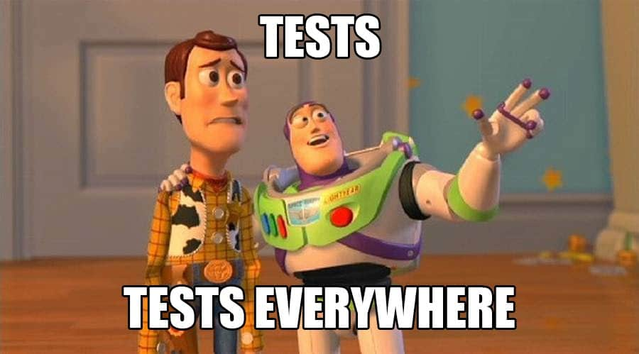

Why Software Testing?
In the fast-paced world of software development, the significance of rigorous testing cannot be overstated, as a single error in a bit can result in the failure of an entire software module. Until the 1980s, debugging was the primary testing method. However, in subsequent decades, the emphasis shifted towards testing software in real-world settings, integrating this stage with a comprehensive quality assurance process within the development life cycle.The defects injection into a software module is well illustrated into the graph from Capers Jones' book, Applied Software Measurement: Global Analysis of Productivity and Quality: In the Coding phase, most bugs (represented by the blue line) arise from human errors, misunderstandings of requirements, and oversights in various function branches. Following this phase in a typical development cycle, testing begins with Unit Tests. These critical tests ensure the accuracy of our code's functions and methods, uncovering defects (shown by the orange line) tied to their execution.
Upon resolving these bugs, our focus shifts to integrating the software, initiating the functional testing phase. Here, we encounter new bugs due to interface inconsistencies and data type mismatches within methods, adding to the total count of defects identified since the start of our code.
Once these bugs are addressed, our system is prepared for deployment in the real world. During this phase, we uncover additional issues like network problems, disparities in package versions between environments, and unanticipated scenarios. Each factor contributes to the rising count of defects in our software system, affecting costs significantly as the complexity of identifying their root causes grows with delayed discovery.
Shift-left tendency and TDD
Based on Capers Jones' book, discovering a defect during the release stage can skyrocket the cost of fixing it by a whopping factor of 640x. This staggering reality stems from the intricate process required to rectify such a bug. It involves pinpointing when this bug triggers a complete failure in our software, comprehending the status of all our application's components and dependencies, and unraveling the root cause. Let's not overlook how this bug affects user experience—it's a colossal catastrophe!Shift-Left defects finding. Source: https://www.stickyminds.com/article/shift-left-approach-software-testing
For this reason, we would like to detect and fix all defects ASAP, moving the percentage of defects found (marked in orange) into our software application to the left to reduce the costs associated with the discovery of these defects. This strategy is followed by multiple organizations to avoid the expense costs (and reputation) of finding a defect in the release stage by implementing the technique called TDD, Test Driven Development. This technique emphasizes writing tests before writing the actual code in this manner, the developer gains a clear understanding of what needs to be implemented and how it should behave following Red-Green-Refactor stages:
- In the Red stage, the developer writes a failing test case that highlights the desired behavior not yet implemented
- In the Green phase, the developer writes the minimum amount of code necessary to pass the test defined in the previous stage
- In the Refactor stage, the developer improves the code without changing its behavior
Unit Testing, Integration Testing, Functional Testing and E2E Testing
As we've touched on earlier, during the early-stage into development-cycle, we have to develop a set of test to avoid all possible defects reaching the release stage but not all the tests have the same scope according with Test Pyrdamid from Martin Fowler:
Unit Testing
As explained above, a Unit Test is an automated test to check an isolate and small section of our code. Typically these tests are very fast and it is based into an fragment of code that stimulates the production code in some way, and then verifies wheter the result matches what was epected.Integration Testing
It can be confused with Unit Tests because if a function, we are going to call it "A", depends on another function, called "B" and we have to write a Unit Test for function "A", we depends of the behavior of function "B" breaking the isolation principle of Unit Tests. According with Martin Fowler, in his blog, a Integration Test is a test that verifies wheter many separated developed modules work together as expected. For this purpose, the different components of our sofrware application must be completed, and harder to write than Unit Tests. Also, these tests usually required a strict order and can't be run at the same time, being these points the main differences between Unit Tests and Integration TestsE2E Testing
This type of testing is a technique that verifies from start to finish the functionality and performance of an entire software application by simulation real-world user scenarios and replicating live data.Example of Unit Testing in Python
In this link Colab, I've made a simple example of Unit Tests using pytest, a Python testing framework, to show you and expands the concepts behind this post.I hope you enjoyed it! 👋